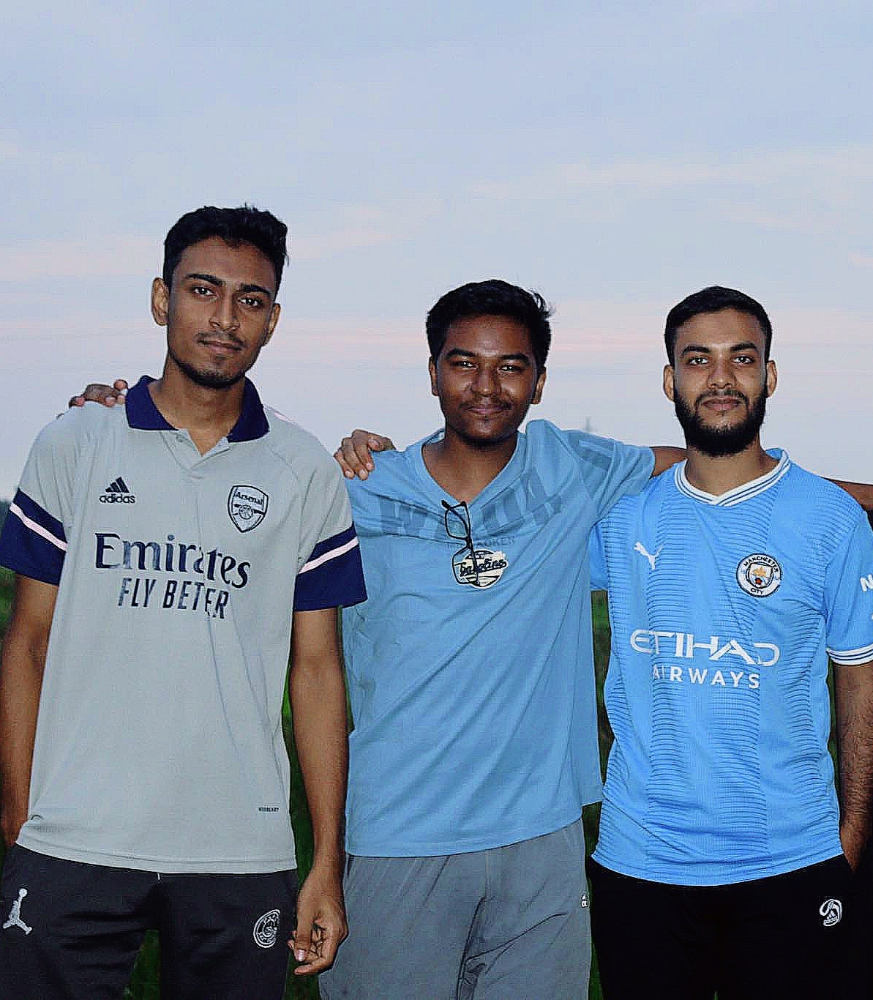

BaBa SaariF
2002-20~
A Real Life Character
My name is Baba Saarif, and my life has been a long journey full of pain, searching, and eventually, personal change. When I was a teenager, I lost my girlfriend in a terrible way—she died by suicide. This broke me completely and left me feeling lost and alone. The sadness and confusion made me search for answers, and I turned to religion for comfort. For a long time, I buried myself in learning about Islam. I read the holy books, prayed often, and looked for hope and meaning in faith. But even then, my pain didn’t just go away. Questions started to fill my mind. It got harder to believe everything, and slowly, I started to doubt all religions. I ended up believing there was a God, but didn’t think any religion had all the answers. This period was hard and lonely, but through it all, I kept looking for the truth. Even though I felt tired and sometimes hopeless, I kept searching. With time, through deep thinking, reading, and sometimes feeling totally lost, I found my way back to Islam. My return wasn’t because it was easy or because someone told me to; it was because I really thought about it and made my own decisions. I wrote a book about what I learned, hoping my experiences could help others. But when I tried to share my ideas, people laughed at me or made fun of my story. That made me feel even more alone. To escape the loneliness and pain, I started using weed. At first, it helped me forget, but soon it became something I relied on every day. I felt trapped and scared that I couldn’t live without it. One day, I decided enough was enough. I didn’t want my life to be controlled by addiction. Fighting to become sober was hard, but by staying focused and honest with myself, I managed to free myself from it. In quitting, I learned that my struggles could become my strength. Now, when I look back, I don’t see failure—I see proof that I can survive and grow. My story isn’t that unusual; many people are fighting secret battles like I did. I share this so that anyone feeling alone knows they’re not the only one. There is always hope, and meaning can be found, even in the hardest times.